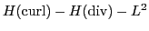

The Brinkman model is a unified law governing the flow of a viscous fluid in cavity (Stokes equations) and in porous media (Darcy equations). It was initially proposed as a homogenization technique for the Navier-Stokes equations. Typical applications of this model are in underground water hydrology, petroleum industry, automotive industry, biomedical engineering, and heat pipes modeling. In this talk, we present a novel mixed formulation of the Brinkman problem. Introducing the flow's vorticity as additional unknown, this formulation leads to a uniformly stable and conforming discretization by standard finite element (Nédélec, Raviart-Thomas, piecewise discontinuous). Based on stability analysis of the problem in the

norms, we derive a scalable block diagonal preconditioner which is optimal in the constant coefficient case. Such preconditioner is based on the auxiliary space AMG solvers for
This work was performed under the auspices of the U.S. Department
of Energy by Lawrence Livermore National Laboratory under Contract
DE-AC52-07NA27344.
keywords: Brinkman problem; Stokes-Darcy coupling; saddle point problems; block preconditioners; algebraic multigrid.